În stînga este slide-ul din curs, în dreapta aceeași figură sau același tabel, calculat în browser din aceleași date. Butonul ▶ modifică parametrul pas cu pas; casetele „Exemplu rezolvat” refac calculul cu cifrele capitolului.
Memorie scurtă și memorie lungă · Diferențierea fracționară · Modelul ARFIMA(p,d,q) · Estimarea lui d · Prognoza cu ARFIMA · Memoria lungă a volatilității · Memoria lungă aparentă
Memorie scurtă și memorie lungă
Patru serii persistente
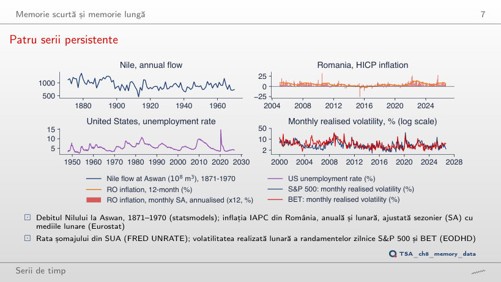
Răspuns
106 luni, aproape nouă ani; Nilul rămîne 11 ani de aceeași parte a mediei, inflația anuală din România 103 luni. Pentru o serie fără memorie, șirurile lungi de acest fel ar fi foarte rare.
ACF de selecție comparată cu un AR(1)
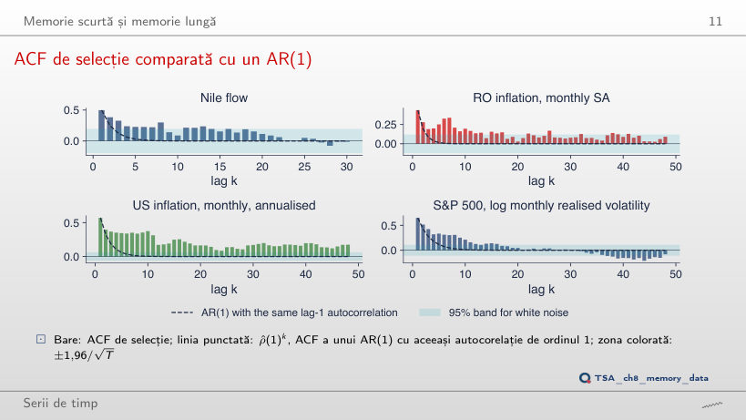
Răspuns
11 din 48, față de 48 din 48 pe 1947–2026; ρ̂(10) scade de la 0,38 la 0,16. O mare parte din memoria seriei complete vine din anii 1970 și de la începutul anilor 1980.
Descreștere hiperbolică și descreștere exponențială
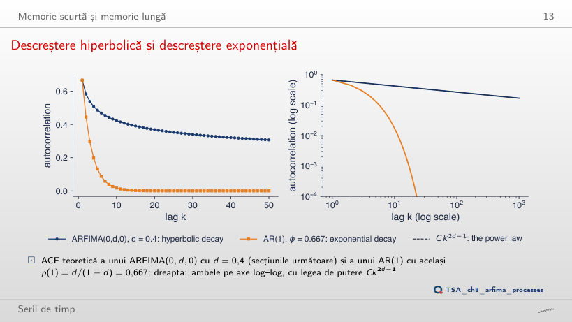
Răspuns
0,064 față de 9,5 · 10⁻⁷. Cu d mic, coada hiperbolică este joasă, dar tot cu cinci ordine de mărime peste cea exponențială.
Interpretarea celor două legi de descreștere
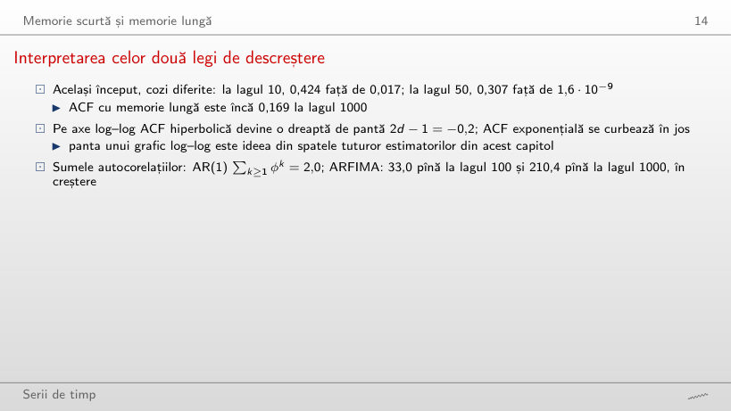
Exemplu rezolvat
Răspuns
De 14 ori: 1,74 față de 0,125. Chiar o memorie lungă slabă acumulează mult peste o memorie scurtă cu același ρ(1).
Diferențierea fracționară
Exemplu rezolvat: ponderile lui (1-L)^0,4
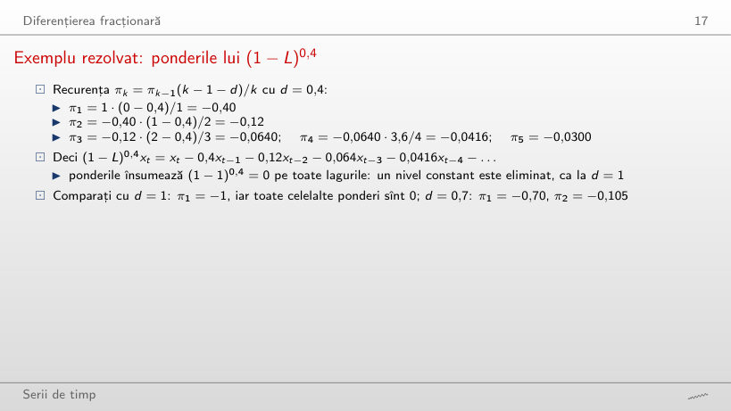
Exemplu rezolvat
Răspuns
π₁ = −1,5 și π₂ = −1,5 · (1 − 1,5)/2 = +0,375. Pentru d > 1 factorul (k − 1 − d) este negativ la k = 2, deci ponderile își schimbă semnul după primul lag.
Diferențiere fracționară și integrare fracționară
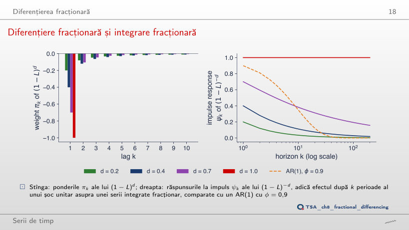
Răspuns
ψ₁₀₀ = 0,59 (0,74 după 10 perioade), față de 0,9¹⁰⁰ = 2,7 · 10⁻⁵ pentru AR(1) cu φ = 0,9. Seria revine la medie, dar foarte încet.
Gradul de diferențiere necesar pentru un preț
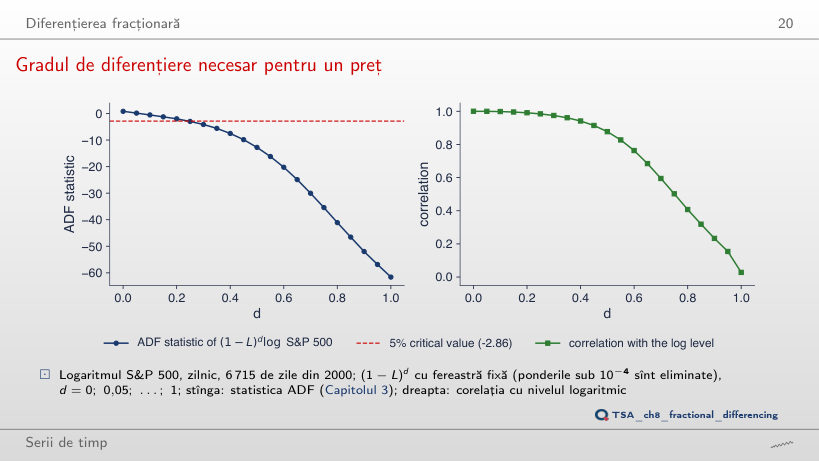
Răspuns
De la d = 0,35, cu 61 de ponderi, față de 0,25 cu 445. Ponderile trunchiate nu mai au suma 0, deci filtrul păstrează o parte din nivel și trebuie un d mai mare pentru staționaritate.
Modelul ARFIMA(p,d,q)
Parametrul d: semnificația fiecărui interval
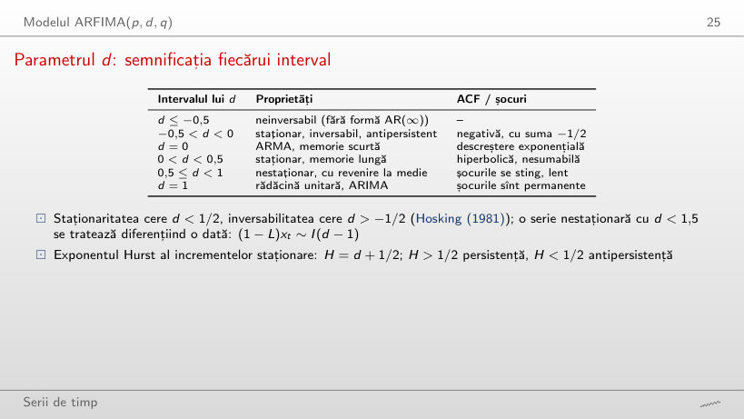
Răspuns
Nu este staționară (d ≥ 0,5), dar revine la medie: ψ₁₀₀ = 0,11. Prima diferență este ARFIMA(0; −0,4; 0), antipersistentă, cu ρ(1) = −0,29.
Exemplu rezolvat: ARFIMA(0; 0,3; 0)
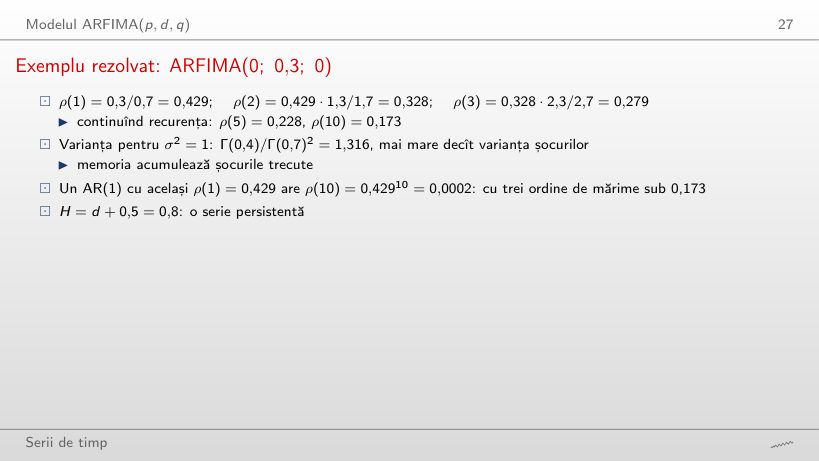
Exemplu rezolvat
Răspuns
ρ(1) = 0,818 și ρ(10) = 0,652; AR(1) cu același ρ(1) are ρ(10) = 0,134. Varianța crește la 3,64.
ARFIMA(0,d,0) cu d = 0,4 și d = -0,4
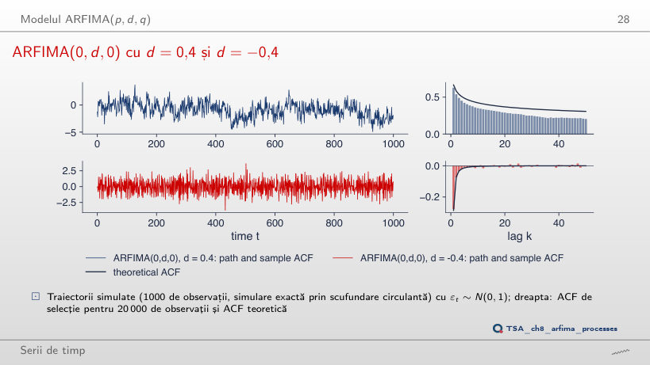
Răspuns
Γ(0,1)/Γ(0,55)² = 3,64. Varianța traiectoriei de 1000 de observații este doar 2,31: media eșantionului absoarbe o parte din componenta lentă.
Mișcarea browniană fracționară pentru trei exponenți Hurst
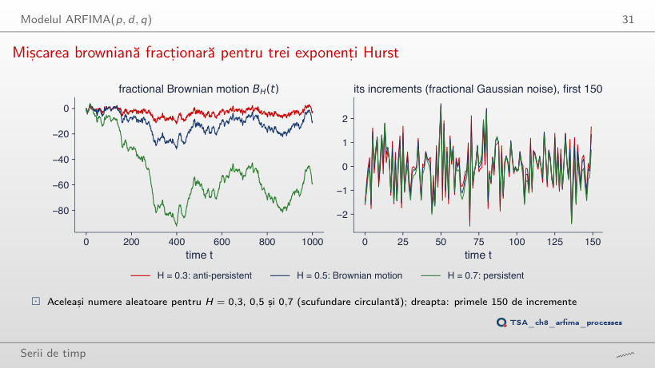
Răspuns
În teorie 20,9 − 1 = 0,87, în eșantion 0,72. Cu o persistență atît de puternică, media celor 1000 de incremente absoarbe o parte din dependență, așa că ACF de selecție este deplasată în jos.
Estimarea lui d
Statistica R/S, pas cu pas
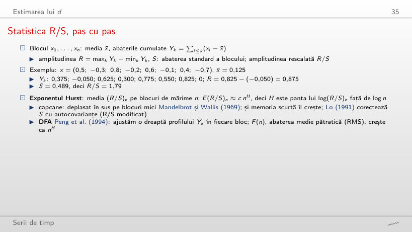
Exemplu rezolvat
Răspuns
Media devine 0,275, R = 0,575, S = 0,386, deci R/S = 1,49 (față de 1,79). O singură valoare schimbă media, deci toate abaterile cumulate.
R/S și DFA pentru trei serii
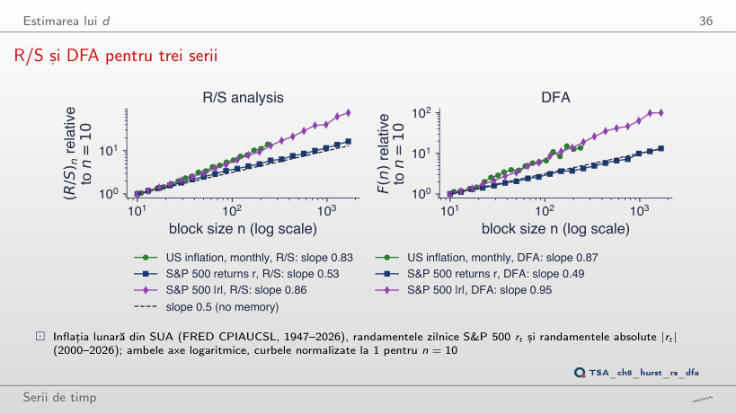
Răspuns
0,92, față de 0,86 cu n de la 10; randamentele rămîn la 0,53. La blocuri mici domină zgomotul de la o zi la alta al lui |rt|; partea persistentă se vede la blocuri mari.
Periodograma și estimatorul GPH
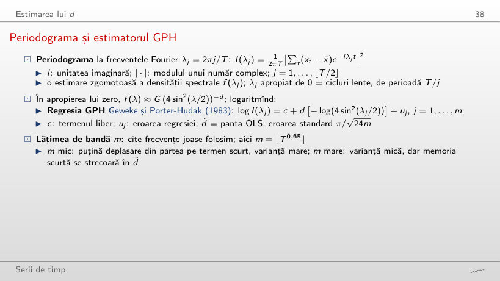
Exemplu rezolvat
Răspuns
d̂ = 0,56, SE 0,16. Cu mai puține frecvențe estimarea urcă spre 0,5, iar eroarea standard crește ca 1/√m.
Regresii GPH: Nilul și inflația din România
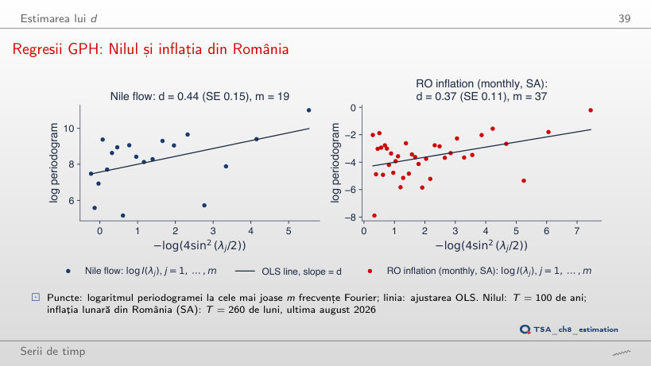
Răspuns
GPH 0,62 (SE 0,07), Whittle local 0,29 (SE 0,05). GPH lucrează cu log I, iar valorile aproape nule de la frecvențele sezoniere eliminate prin ajustare îi trag panta în sus; Whittle local folosește I însăși și nu este afectat.
Interpretarea regresiilor GPH
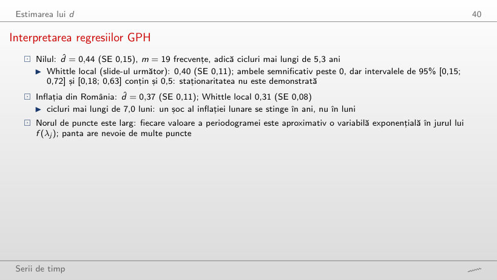
Răspuns
Nu: d̂ = 0,39, SE 0,20, intervalul [−0,01; 0,79]. Cu m = 10 GPH nu mai separă d de 0; Whittle local [0,15; 0,77] încă îl separă.
Estimatorul Whittle local
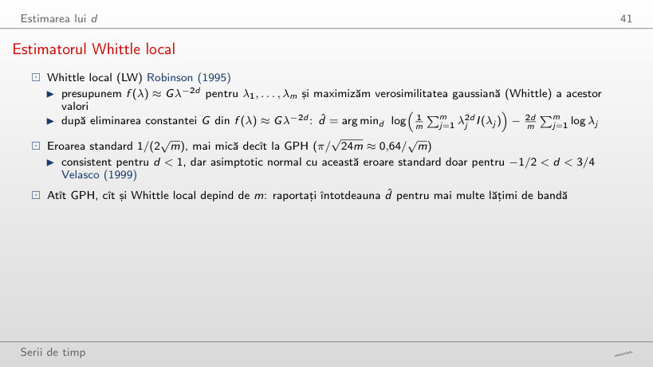
Exemplu rezolvat
Răspuns
Nu: d̂ = 0,91 > 3/4, în afara intervalului aproximării normale. Intervalul [0,80; 1,01] conține oricum 1, deci revenirea la medie nu este demonstrată.
Sensibilitatea la lățimea de bandă
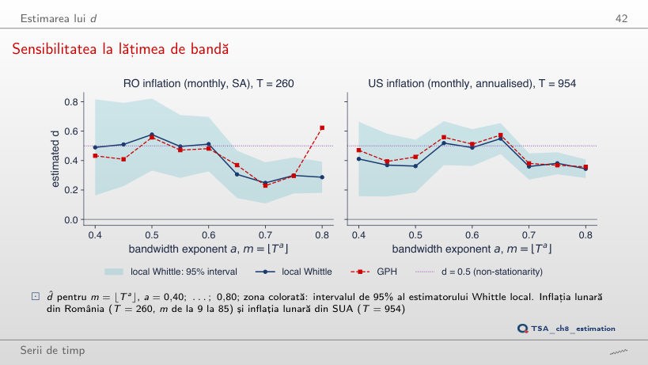
Răspuns
SUA: 0,35–0,54; România: 0,24–0,59. Concluzia memoriei lungi rămîne, iar incertitudinea de circa ±0,15 se vede și fără anii 2020–2026.
Monte Carlo: cinci estimatori ai lui d
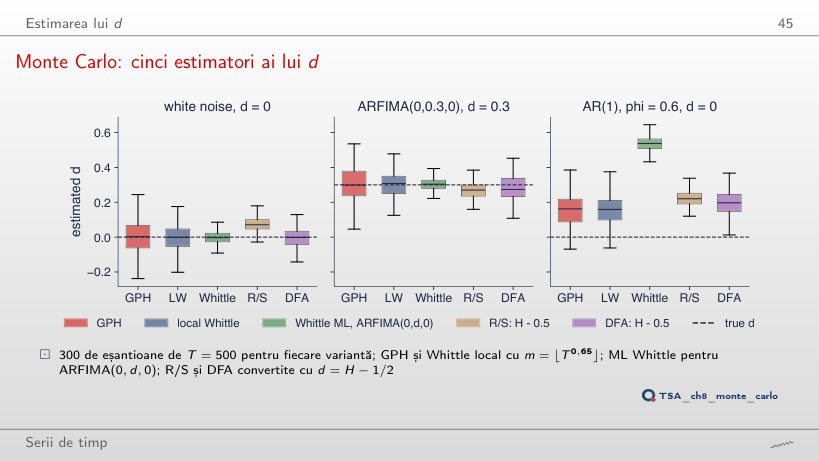
Răspuns
Whittle ML: abaterea standard 0,033, față de 0,076 (Whittle local) și 0,086 (GPH), aceeași ordine ca la 300 de replicări (0,04; 0,08; 0,10).
Inflația din România: ARMA sau ARFIMA?
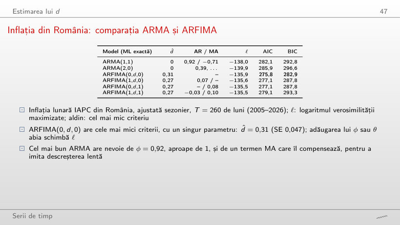
Răspuns
ARFIMA(0,d,0), cu d̂ = 0,24: BIC 191,2 față de 195,5 pentru ARMA(1,1). Concluzia din curs se păstrează și pe eșantionul mai scurt.
Inflația din România: autocorelațiile modelelor estimate
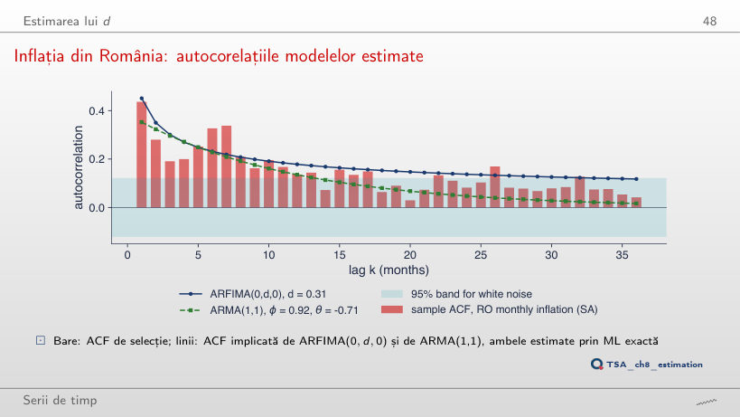
Răspuns
ℓ scade de la −135,9 la −139,8; 2Δℓ = 7,8 > 3,84, deci d = 0,45 este respins la 5%. Curba ARFIMA devine prea înaltă la lagurile 12 și 24 (0,65 și 0,60).
Memoria lungă în douăsprezece serii
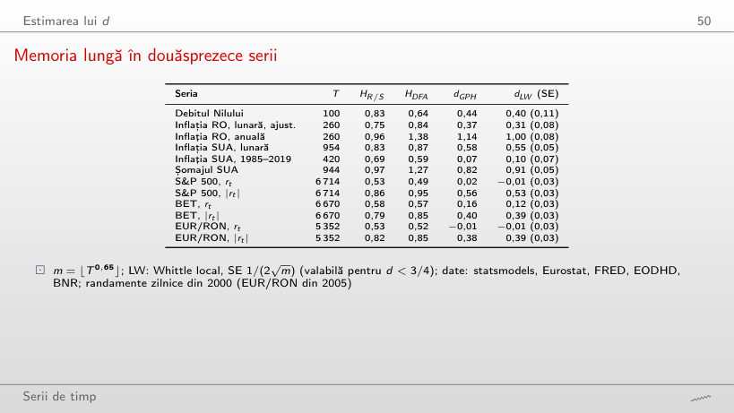
Răspuns
Nu: d̂ = 0,64, intervalul [0,46; 0,82], iar SE este valabilă (d̂ < 3/4). Cu a = 0,65 (m = 85): 0,91, [0,80; 1,01]. Verdictul depinde de lățimea de bandă.
Prognoza cu ARFIMA
Inflația din SUA: prognoze ARFIMA și AR
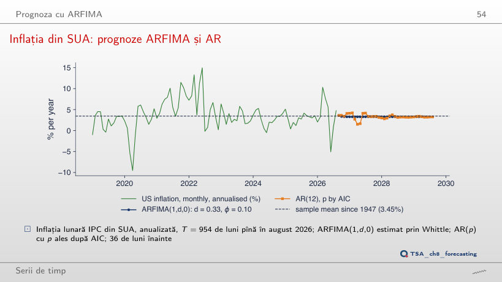
Răspuns
ARFIMA: 3,37 pp, față de 4,02 pp pentru AR(12). Ambele porneau de sus, dar AR(12) a prelungit vîrful din 2022 (6,2% peste un an, față de 5,4%), iar inflația a scăzut mai repede.
Contribuția memoriei lungi la prognoză
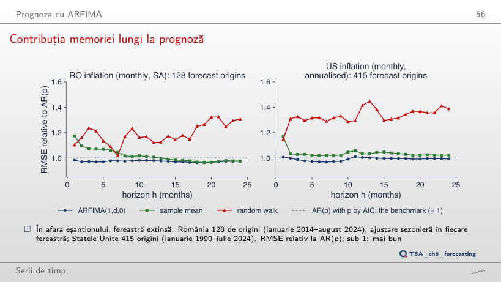
Răspuns
Nu: raportul este 1,038 la o lună (AR mai precis), 0,999 la 12 și 0,976 la 24. Cîștigul rămîne doar la orizonturile lungi.
Interpretarea comparației prognozelor
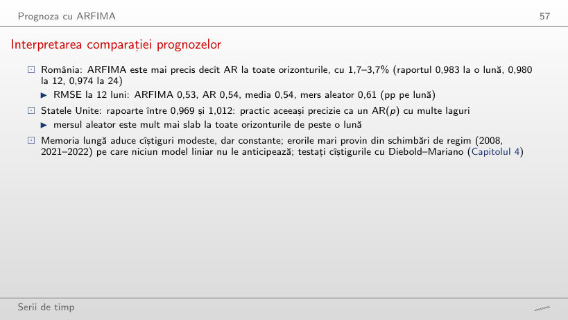
Răspuns
0,57 și 0,64 pp pe lună (față de 0,53 și 0,61 pe toate originile): mersul aleator rămîne cel mai slab.
Memoria lungă a volatilității
Randamente, randamente absolute și pătrate
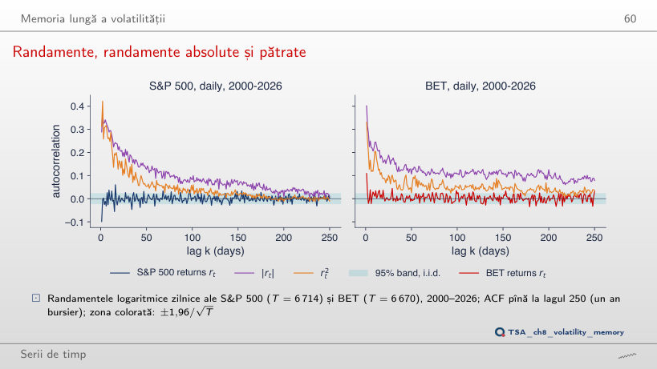
Răspuns
6 din 250 (față de 227), iar Whittle local 0,00. Amestecarea păstrează distribuția și distruge ordinea: memoria stă în succesiunea zilelor calme și agitate.
Volatilitatea realizată lunară: ARFIMA sau ARMA?
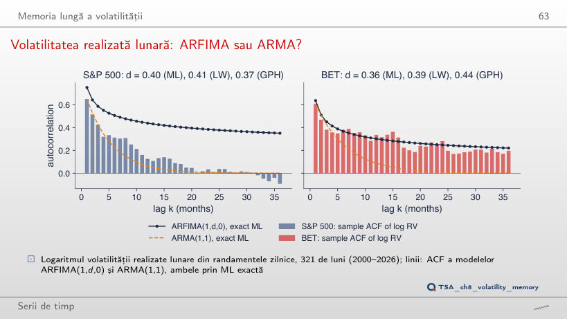
Răspuns
Cu 43,8 (BET) și 33,4 (S&P 500): ambele valori sînt respinse clar. La BET, ACF a modelului la lagul 24 ar fi 0,004, față de 0,28 în eșantion.
Interpretarea volatilității realizate
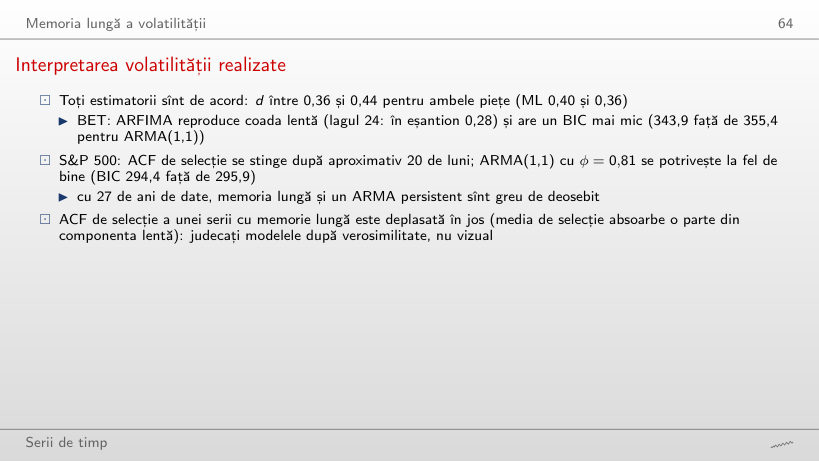
Răspuns
Între 0,36 (ML, BET) și 0,74 (GPH, BET), față de 0,36–0,44 în curs. Cu puține frecvențe estimările semiparametrice se împrăștie; ML nu depinde de m.
FIGARCH și HAR
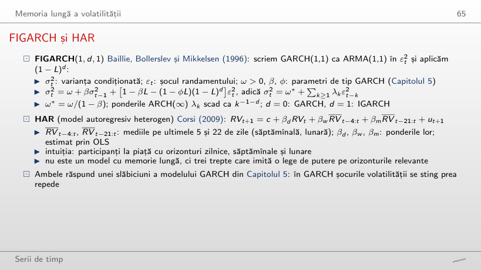
Exemplu rezolvat
Răspuns
Componenta săptămînală: β̂w = 0,62; β̂d = 0,10, jumătate din 0,20 pe 2000–2026.
FIGARCH comparat cu GARCH; HAR comparat cu (1-L)^d
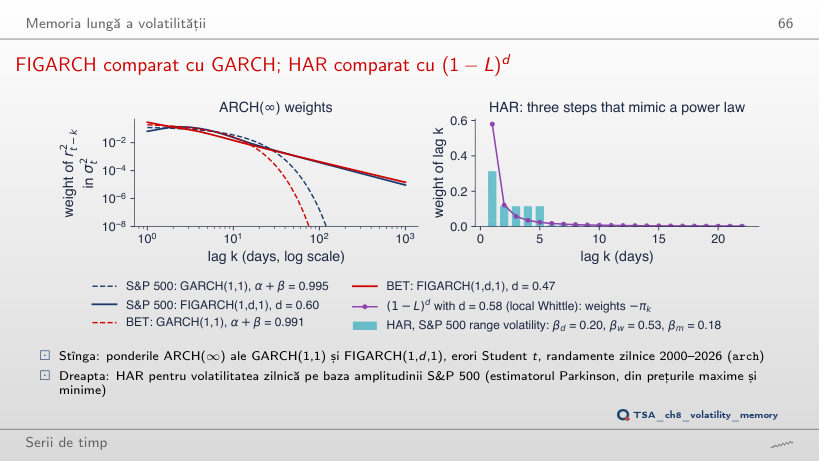
Răspuns
FIGARCH 2,9 · 10⁻⁵, GARCH 2,8 · 10⁻³¹. Chiar cu α + β = 0,995, ponderile GARCH scad exponențial; cele FIGARCH scad ca o putere.
Interpretarea modelelor FIGARCH și HAR
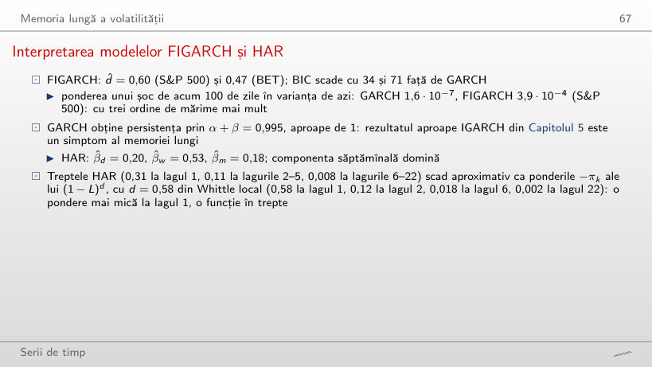
Răspuns
Lagul 1: 0,88 față de 0,31; lagul 22: 0,0003 față de 0,008. Un d mai mare pune mai multă pondere pe primul lag și mai puțină pe coadă.
Memoria lungă aparentă
Memorie scurtă care pare lungă
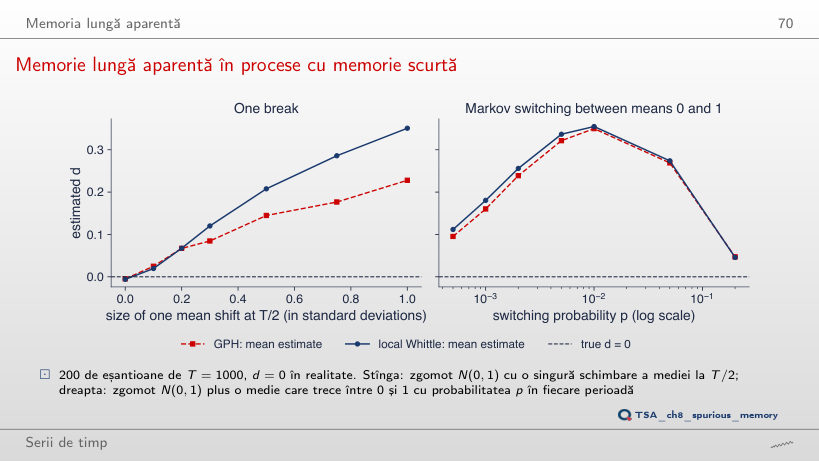
Răspuns
0,31, peste cuantila de 95% fără schimbare (0,07): distribuțiile nu se suprapun, deci fiecare dintre cele 200 de eșantioane cu ruptură arată „memorie lungă”.
Nilul în 1898: memorie sau ruptură?
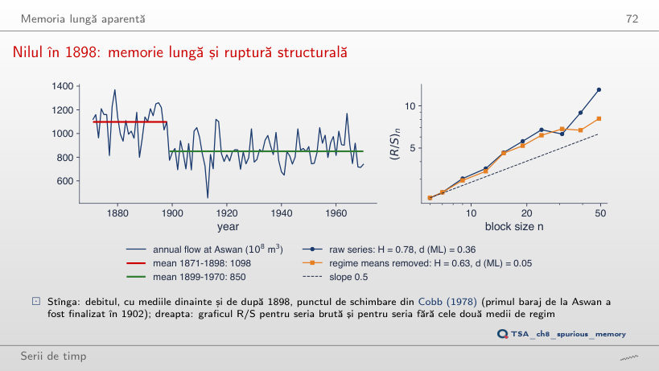
Răspuns
0,35, aproape cît în seria brută (0,36). O ruptură pusă în alt an nu explică memoria; doar ruptura din 1898 o reduce la 0,05.
Stabilitatea memoriei în timp
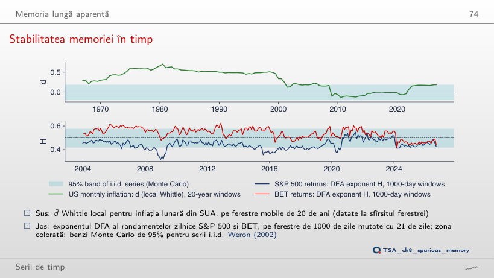
Răspuns
0,64 în fereastra încheiată în iulie 1974, față de 0,71 în iulie 1980 cu ferestre de 20 de ani; banda fără memorie se lărgește la [−0,33; 0,25].
Debitul Nilului la Assuan, 1871–1970 (statsmodels). Inflația IAPC a României, lunară și anuală (Eurostat prc_hicp_minr, ianuarie 2005 – august 2026). Inflația IPC a SUA (FRED CPIAUCSL, februarie 1947 – august 2026) și rata șomajului (FRED UNRATE, ianuarie 1948 – septembrie 2026). Cursul EUR/RON de referință (BNR) și prețurile zilnice S&P 500 și BET (data/market, pînă la 18 septembrie 2026). Seriile FRED, Eurostat și BNR sînt citite cu funcțiile capitolului (descărcate pe 4 noiembrie 2026) și tăiate la datele de sfîrșit ale slide-urilor; reproduc exact cifrele din curs. Estimatorii R/S, DFA, GPH, Whittle local, verosimilitatea exactă, regresia HAR și diferențierea fracționară se recalculează în browser; simulările folosesc extragerile seminței capitolului, iar estimările Monte Carlo, erorile prognozelor în afara eșantionului, estimările Whittle ARFIMA(1,d,0) și tabelele de modele sînt cele ale codului capitolului. Variantele care nu apar în curs (alt eșantion, altă lățime de bandă, altă origine a prognozei, alte ferestre, alt d) sînt rulări suplimentare ale codului capitolului, cu aceleași date și aceeași sămînță.